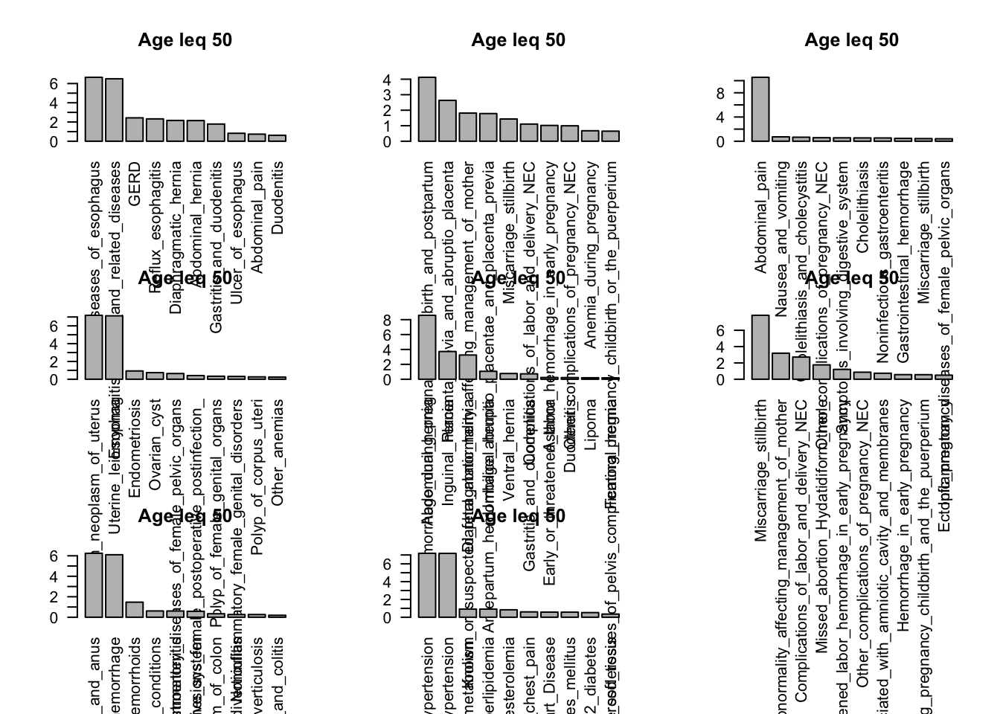
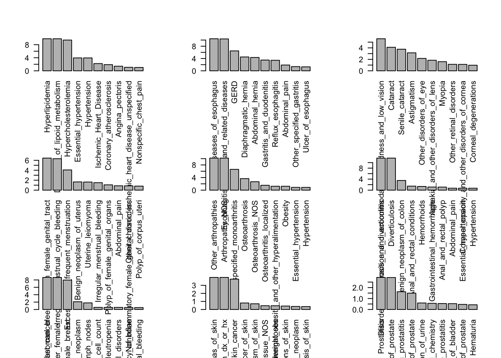
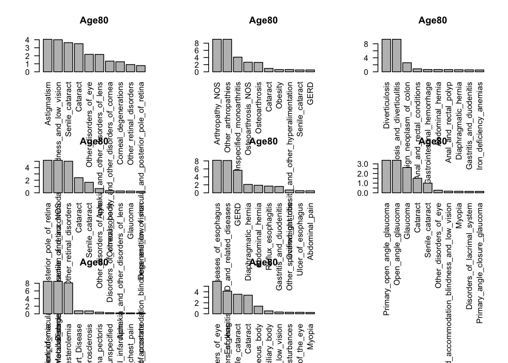
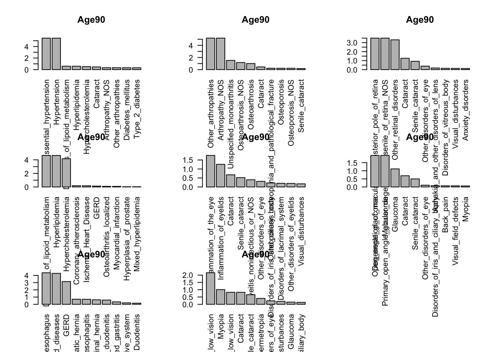

flashier_nmg
2023-12-18
Last updated: 2024-01-05
Checks: 6 1
Knit directory: ~/multistate2/
This reproducible R Markdown analysis was created with workflowr (version 1.7.1). The Checks tab describes the reproducibility checks that were applied when the results were created. The Past versions tab lists the development history.
The R Markdown file has unstaged changes. To know which version of
the R Markdown file created these results, you’ll want to first commit
it to the Git repo. If you’re still working on the analysis, you can
ignore this warning. When you’re finished, you can run
wflow_publish to commit the R Markdown file and build the
HTML.
Great job! The global environment was empty. Objects defined in the global environment can affect the analysis in your R Markdown file in unknown ways. For reproduciblity it’s best to always run the code in an empty environment.
The command set.seed(20230211) was run prior to running
the code in the R Markdown file. Setting a seed ensures that any results
that rely on randomness, e.g. subsampling or permutations, are
reproducible.
Great job! Recording the operating system, R version, and package versions is critical for reproducibility.
Nice! There were no cached chunks for this analysis, so you can be confident that you successfully produced the results during this run.
Great job! Using relative paths to the files within your workflowr project makes it easier to run your code on other machines.
Great! You are using Git for version control. Tracking code development and connecting the code version to the results is critical for reproducibility.
The results in this page were generated with repository version 01a7ce9. See the Past versions tab to see a history of the changes made to the R Markdown and HTML files.
Note that you need to be careful to ensure that all relevant files for
the analysis have been committed to Git prior to generating the results
(you can use wflow_publish or
wflow_git_commit). workflowr only checks the R Markdown
file, but you know if there are other scripts or data files that it
depends on. Below is the status of the Git repository when the results
were generated:
Ignored files:
Ignored: .DS_Store
Ignored: .Rproj.user/
Ignored: analysis/.DS_Store
Ignored: code/.DS_Store
Ignored: data/
Ignored: lesliepics/.DS_Store
Ignored: output/
Ignored: plots/.DS_Store
Untracked files:
Untracked: analysis/figure/
Unstaged changes:
Modified: analysis/flash2.Rmd
Note that any generated files, e.g. HTML, png, CSS, etc., are not included in this status report because it is ok for generated content to have uncommitted changes.
These are the previous versions of the repository in which changes were
made to the R Markdown (analysis/flash2.Rmd) and HTML
(docs/flash2.html) files. If you’ve configured a remote Git
repository (see ?wflow_git_remote), click on the hyperlinks
in the table below to view the files as they were in that past version.
| File | Version | Author | Date | Message |
|---|---|---|---|---|
| Rmd | 8b0f441 | Sarah Urbut | 2023-12-27 | Update |
| Rmd | b297d53 | Sarah Urbut | 2023-12-25 | Update |
| Rmd | 7ab20de | Sarah Urbut | 2023-12-19 | update |
| Rmd | c9ba0ac | Sarah Urbut | 2023-12-18 | update |
| html | c9ba0ac | Sarah Urbut | 2023-12-18 | update |
| Rmd | a454652 | Sarah Urbut | 2023-12-18 | update |
| html | a454652 | Sarah Urbut | 2023-12-18 | update |
The EBMF Model
Empirical Bayes matrix factorization (Wang and Stephens, 2021) decomposes a data matrix \(Y \in \mathbb{R}^{n \times p}\) as \[ Y = LF' + E, \] with “loadings” \(L \in \mathbb{R}^{n \times K}\), “factors” \(F \in \mathbb{R}^{p \times K}\), and residual errors \[ e_{ij} \sim N(0, 1 / \tau_{ij}).\] The model puts priors on each factor and each set of loadings: \[f_{\cdot k} \sim g^{(f)}_k,\ \ell_{\cdot k} \sim g^{(\ell)}_k,\] with \(g^{(\ell)}_k\) and \(g^{(f)}_k\) assumed to belong to some families of distributions \(\mathcal{G}^{(\ell)}\) and \(\mathcal{G}^{(f)}\) and estimated using the data. The default choice of prior family for both factors and loadings is the family of point-normal distributions: \[ g \sim \pi_0 \delta_0 + (1 - \pi_0) N(0, \sigma^2), \] where both \(\pi_0\) and \(\sigma^2\) are free parameters. This family is especially useful when factors and loadings can be expected to be at least modestly sparse; in other settings, different prior families might be preferred.
To avoid over-parametrization, it is necessary to make some assumptions about the precision parameters \(\tau_{ij}\). The default assumption is that all \(\tau_{ij}\)s are equal: \[ e_{ij} \sim N(0, 1 / \tau).\]
Note that when the prior families \(\mathcal{G}^{(\ell)}\) and \(\mathcal{G}^{(f)}\) are closed under scaling (as is typically the case), then the model as formulated above is not identifiable, since we can scale each set of loadings \(\ell_{\cdot k}\) by any constant \(d_k \ne 0\) if we also scale factor \(f_{\cdot k}\) by \(1 / d_k\).
We can make the matrix factorization unique by writing \[ Y = LDF' + E, \] with the scales of loadings \(\ell_{\cdot 1}, \ldots, \ell_{\cdot K}\) and factors \(f_{\cdot 1}, \ldots, f_{\cdot K}\) constrained in some fashion (for example, by requiring \(\| \ell_{\cdot k} \|_2 = 1\) and \(\| f_{\cdot k} \|_2 = 1\) for all \(k\)). We refer to such a factorization as an LDF factorization.
Age up to and including
Here we will examine the sparse factor analysis of individuals who receive a code at the age under each plot indicated
Now let’s plot:




All ages
We can also do for all, but we’ll need to first remove rows with 0s and binarize the matrix such as non-zero values are 1 and zero values are 0.
Recall we shall keep a non-negative prior on the factors and loadings,
Here we make no restriction and examine the top 20 variable loadings:

| Version | Author | Date |
|---|---|---|
| a454652 | Sarah Urbut | 2023-12-18 |
Group by age
looking at the codes that occur exactly at that age group
Now let’s plot:
| Version | Author | Date |
|---|---|---|
| a454652 | Sarah Urbut | 2023-12-18 |
| Version | Author | Date |
|---|---|---|
| a454652 | Sarah Urbut | 2023-12-18 |

| Version | Author | Date |
|---|---|---|
| a454652 | Sarah Urbut | 2023-12-18 |

| Version | Author | Date |
|---|---|---|
| a454652 | Sarah Urbut | 2023-12-18 |

| Version | Author | Date |
|---|---|---|
| a454652 | Sarah Urbut | 2023-12-18 |

| Version | Author | Date |
|---|---|---|
| a454652 | Sarah Urbut | 2023-12-18 |
Wth fixed s0 and k=10
- why does mean come out when K = 10 but not K=47
- the mean has been removed?
Warning in plot.flash(f): Consider setting argument pm_groups to produce a more
readable plot. Hyperlipidemia
9.827737
Disorders_of_lipoid_metabolism
9.821526
Hypercholesterolemia
9.423210
Essential_hypertension
3.998151
Hypertension
3.995062
Ischemic_Heart_Disease
2.259322
Coronary_atherosclerosis
1.923940
Angina_pectoris
1.437049
Other_chronic_ischemic_heart_disease_unspecified
1.104830
Nonspecific_chest_pain
1.045895 Let’s try with a very small s and show that ELBO worsens.
[1] 1217449566However, the elbo is worse here than not specifying s
# f2=flashier::flash(data = X,ebnm_fn = c(ebnm_point_exponential,ebnm_point_exponential),var_type = 2,greedy_Kmax = 50,S=1/sqrt(ncol(X)))
# saveRDS(f2,file = "~/Library/CloudStorage/Dropbox-Personal/factor_run50_sqrtncol.rds")
f2=readRDS("~/Library/CloudStorage/Dropbox-Personal/flash_allages/factor_run50_sqrtncol.rds")
f2$elbo[1] 1174992551#f2=flashier::flash(data = X,ebnm_fn = c(ebnm_point_exponential,ebnm_point_exponential),var_type = 2,greedy_Kmax = 50)
#saveRDS(f2,file = "~/Library/CloudStorage/Dropbox-Personal/factor_run50_nospec.rds")
f2=readRDS("~/Library/CloudStorage/Dropbox-Personal/flash_allages/factor_run50_nospec.rds")
f2$elbo[1] 1333665457Show that perhaps the point exponential forces cardiac away and weird removal of factors; here we usee point exponential. So now we will use normal mis (no restrictions)
filepath="~/Library/CloudStorage/Dropbox-Personal/pheno_dir/"
## with no positivity constraint
fit=readRDS(paste0(filepath,"fit_default_all.rds"))
fit$F_ghat[[1]]$pi
[1] 1.371674e-10 1.000000e+00
$mean
[1] 0 0
$sd
[1] 0.000000 1.782639
attr(,"class")
[1] "normalmix"
attr(,"row.names")
[1] 1 2head(sort(fit$F_pm[,2],decreasing = TRUE,n=20)) Secondary_malignant_neoplasm
6.908156
Decreased_white_blood_cell_count
5.659376
Neutropenia
5.659376
Secondary_malignant_neoplasm_of_liver
5.294278
Secondary_malignancy_of_respiratory_organs
5.036501
Secondary_malignant_neoplasm_of_digestive_systems
4.956847 tail(sort(fit$F_pm[,2],decreasing = TRUE,n=20)) Ischemic_Heart_Disease Coronary_atherosclerosis
-5.954214 -6.316770
Mitral_valve_disease Nonrheumatic_mitral_valve_disorders
-7.161168 -7.173322
Heart_valve_disorders Rheumatic_disease_of_the_heart_valves
-7.511040 -7.677625 head(sort(fit$F_pm[,3],decreasing = TRUE,n=20)) Other_arthropathies Arthropathy_NOS
5.921023 5.920798
Esophagitis_GERD_and_related_diseases Diseases_of_esophagus
5.770755 5.720141
GERD Diaphragmatic_hernia
5.288744 4.869638 tail(sort(fit$F_pm[,3],decreasing = TRUE,n=20)) Heart_valve_disorders Sepsis
-3.742614 -3.761820
Sepsis_and_SIRS Secondary_malignant_neoplasm
-3.761820 -3.795913
Decreased_white_blood_cell_count Neutropenia
-3.884566 -3.884566 head(sort(fit$F_pm[,4],decreasing = TRUE,n=20)) Chronic_liver_disease_and_cirrhosis
4.676351
Liver_abscess_and_sequelae_of_chronic_liver_disease
4.673938
Portal_hypertension
4.484630
Other_biliary_tract_disease
4.359108
Cirrhosis_of_liver_without_mention_of_alcohol
4.207063
Other_chronic_nonalcoholic_liver_disease
3.890278 tail(sort(fit$F_pm[,4],decreasing = TRUE,n=20)) Aphasia_speech_disturbance
-6.097317
Other_cerebral_degenerations
-6.344274
Delirium_dementia_and_amnestic_and_other_cognitive_disorders
-6.860579
Cerebrovascular_disease
-7.006708
Dementias
-7.028397
Neurological_disorders
-7.346857 ## with positivity constraint
# flashier::flash(data = X,ebnm_fn = c(ebnm_point_exponential,ebnm_point_exponential),var_type = 2,greedy_Kmax = 50)
# Nullchecking 50 factors...
# Factor1set to zero, increasing objective by 1.045e+07.
# Factor5set to zero, increasing objective by 9.593e+05.
# Factor11set to zero, increasing objective by 5.946e+05.
f=readRDS("~/Library/CloudStorage/Dropbox-Personal/flash_allages/factor_run50_nospec.rds")
lapply(seq(1:20),function(x){head(sort(f$F_pm[,x],decreasing = TRUE),n=10)})[[1]]
Hyperlipidemia
9.827737
Disorders_of_lipoid_metabolism
9.821526
Hypercholesterolemia
9.423210
Essential_hypertension
3.998151
Hypertension
3.995062
Ischemic_Heart_Disease
2.259322
Coronary_atherosclerosis
1.923940
Angina_pectoris
1.437049
Other_chronic_ischemic_heart_disease_unspecified
1.104830
Nonspecific_chest_pain
1.045895
[[2]]
Diseases_of_esophagus Esophagitis_GERD_and_related_diseases
10.420758 10.362637
GERD Diaphragmatic_hernia
6.470128 4.517740
Abdominal_hernia Gastritis_and_duodenitis
4.354367 3.508967
Reflux_esophagitis Abdominal_pain
3.427398 1.887151
Other_specified_gastritis Ulcer_of_esophagus
1.380232 1.291121
[[3]]
Disorders_of_refraction_and_accommodation_blindness_and_low_vision
5.5657121
Cataract
4.0856788
Senile_cataract
3.7520344
Astigmatism
3.1250768
Other_disorders_of_eye
2.1538859
Aphakia_and_other_disorders_of_lens
1.8363301
Myopia
1.5867014
Other_retinal_disorders
1.1305773
Corneal_opacity_and_other_disorders_of_cornea
1.1178006
Corneal_degenerations
0.9737772
[[4]]
Menopausal_and_postmenopausal_disorders
6.0245064
Postmenopausal_bleeding
5.3184660
Polyp_of_female_genital_organs
1.7496646
Polyp_of_corpus_uteri
1.5032304
Noninflammatory_female_genital_disorders
1.3526286
Disorders_of_uterus_NEC
0.9094944
Postmenopausal_atrophic_vaginitis
0.7103872
Benign_neoplasm_of_uterus
0.7071087
Uterine_leiomyoma
0.6832422
Genital_prolapse
0.6046444
[[5]]
Acquired_foot_deformities Hallux_valgus_Bunion_
6.0518473 4.1709674
Acquired_toe_deformities Hammer_toe_acquired_
3.3854013 1.4272144
Hallux_rigidus Other_arthropathies
0.9784330 0.7433947
Arthropathy_NOS Osteoarthrosis
0.7417125 0.5513705
Other_peripheral_nerve_disorders Osteoarthritis_localized
0.4272083 0.3860997
[[6]]
Melanomas_of_skin
3.8807419
Melanomas_of_skin_dx_or_hx
3.8807419
Skin_cancer
3.6889390
Other_non_epithelial_cancer_of_skin
0.8038583
Benign_neoplasm_of_skin
0.6991623
Disorder_of_skin_and_subcutaneous_tissue_NOS
0.4637615
Degenerative_skin_conditions_and_other_dermatoses
0.4618801
Other_hypertrophic_and_atrophic_conditions_of_skin
0.4238432
Secondary_malignant_neoplasm
0.4064121
Scar_conditions_and_fibrosis_of_skin
0.3538131
[[7]]
Other_arthropathies
9.7412804
Arthropathy_NOS
9.7401734
Unspecified_monoarthritis
6.4504086
Osteoarthrosis
3.4607030
Osteoarthrosis_NOS
2.5460180
Osteoarthritis_localized
1.4420574
Obesity
1.1873789
Overweight_obesity_and_other_hyperalimentation
1.1871502
Essential_hypertension
0.8976839
Hypertension
0.8935508
[[8]]
Prostatitis Inflammatory_diseases_of_prostate
2.9030906 2.8926372
Chronic_prostatitis Hyperplasia_of_prostate
1.6075139 1.4860671
Retention_of_urine Other_abnormal_blood_chemistry
0.5867560 0.5565072
Acute_prostatitis Other_disorders_of_bladder
0.5364538 0.5320937
Cancer_of_prostate Hematuria
0.4672013 0.4333023
[[9]]
Diverticulosis_and_diverticulitis Diverticulosis
11.6773037 11.6757714
Benign_neoplasm_of_colon Anal_and_rectal_conditions
3.3304237 1.3450871
Hemorrhoids Gastrointestinal_hemorrhage
1.2436725 1.1221824
Anal_and_rectal_polyp Abdominal_pain
1.0304935 0.6524156
Hemorrhage_of_rectum_and_anus Symptoms_involving_digestive_system
0.6145783 0.6081308
[[10]]
Breast_cancer
8.6382777
Breast_cancer_female_
8.6225780
Malignant_neoplasm_of_female_breast
7.9741682
Secondary_malignant_neoplasm
2.1201166
Secondary_malignancy_of_lymph_nodes
1.7961603
Decreased_white_blood_cell_count
0.5854029
Neutropenia
0.5854029
Secondary_malignancy_of_bone
0.5457203
Secondary_malignancy_of_respiratory_organs
0.4066315
Secondary_malignant_neoplasm_of_liver
0.4056202
[[11]]
Cholelithiasis_and_cholecystitis
9.956710
Cholelithiasis
9.349390
Cholelithiasis_with_other_cholecystitis
4.173299
Other_biliary_tract_disease
1.985100
Calculus_of_bile_duct
1.743519
Cholelithiasis_with_acute_cholecystitis
1.464731
Abdominal_pain
1.335727
Cholecystitis_without_cholelithiasis
1.255778
Other_disorders_of_peritoneum
1.045874
Peritoneal_adhesions_postoperative_postinfection_
1.038031
[[12]]
Degeneration_of_macula_and_posterior_pole_of_retina
5.8054735
Macular_degeneration_senile_of_retina_NOS
5.8046941
Other_retinal_disorders
5.6515378
Cataract
2.6077810
Senile_cataract
1.7047605
Other_disorders_of_eye
0.7280615
Disorders_of_vitreous_body
0.3875987
Retinal_detachments_and_defects
0.3233335
Glaucoma
0.3151229
Aphakia_and_other_disorders_of_lens
0.3037824
[[13]]
Hemorrhage_during_pregnancy_childbirth_and_postpartum
2.8513666
Placenta_previa_and_abruptio_placenta
1.8173679
Known_or_suspected_fetal_abnormality_affecting_management_of_mother
1.2831224
Antepartum_hemorrhage_abruptio_placentae_and_placenta_previa
1.2355651
Miscarriage_stillbirth
1.0281240
Complications_of_labor_and_delivery_NEC
0.7794437
Early_or_threatened_labor_hemorrhage_in_early_pregnancy
0.7267047
Other_complications_of_pregnancy_NEC
0.7125007
Anemia_during_pregnancy
0.4719165
Abnormality_of_organs_and_soft_tissues_of_pelvis_complicating_pregnancy_childbirth_or_the_puerperium
0.4559127
[[14]]
Inflammatory_diseases_of_female_pelvic_organs
5.3574324
Inflammatory_disease_of_cervix_vagina_and_vulva
2.3563774
Pelvic_peritoneal_adhesions_female_postoperative_postinfection_
2.3334107
Cervicitis_and_endocervicitis
0.9992268
Pelvic_inflammatory_disease_PID_
0.8327572
Ovarian_cyst
0.7829067
Endometriosis
0.7623285
Benign_neoplasm_of_uterus
0.7508628
Uterine_leiomyoma
0.7278781
Noninflammatory_female_genital_disorders
0.6614820
[[15]]
Known_or_suspected_fetal_abnormality_affecting_management_of_mother
4.3124997
Miscarriage_stillbirth
2.3418901
Complications_of_labor_and_delivery_NEC
2.0463241
Other_complications_of_pregnancy_NEC
0.9047051
Early_or_threatened_labor_hemorrhage_in_early_pregnancy
0.8616304
Problems_associated_with_amniotic_cavity_and_membranes
0.7098041
Hypertension_complicating_pregnancy_childbirth_and_the_puerperium
0.5520542
Abdominal_pain
0.4419053
Abnormality_of_organs_and_soft_tissues_of_pelvis_complicating_pregnancy_childbirth_or_the_puerperium
0.4123290
Anemia_during_pregnancy
0.3415194
[[16]]
Malignant_neoplasm_of_ovary_and_other_uterine_adnexa
2.4859088
Cancer_of_other_female_genital_organs
2.4768692
Malignant_neoplasm_of_ovary
2.3713324
Secondary_malignant_neoplasm
1.3057986
Secondary_malignant_neoplasm_of_digestive_systems
1.2438206
Ascites_non_malignant_
0.6377631
Intestinal_obstruction_without_mention_of_hernia
0.4171660
Secondary_malignancy_of_lymph_nodes
0.4132570
Nausea_and_vomiting
0.4036843
Secondary_malignant_neoplasm_of_liver
0.3982881
[[17]]
Appendiceal_conditions
3.60347370
Appendicitis
3.57901172
Acute_appendicitis
2.83873030
Abdominal_pain
0.32799011
Intestinal_obstruction_without_mention_of_hernia
0.09592439
Other_disorders_of_peritoneum
0.08820446
Functional_digestive_disorders
0.08659164
Peritoneal_adhesions_postoperative_postinfection_
0.08651133
Noninfectious_gastroenteritis
0.08451339
Ventral_hernia
0.08394410
[[18]]
Poisoning_by_agents_primarily_affecting_the_cardiovascular_system
0.27130888
Cardiac_rhythm_regulators_causing_adverse_effects_in_therapeutic_use
0.12852176
Poisoning_by_analgesics_antipyretics_and_antirheumatics
0.09973541
Gastrointestinal_hemorrhage
0.07168437
Poisoning_by_psychotropic_agents
0.07116880
Alcohol_related_disorders
0.06804766
Alcoholism
0.06510954
Hemorrhage_of_rectum_and_anus
0.05856747
Antihypertensive_agents_causing_adverse_effects
0.04284083
Antirheumatics_causing_adverse_effects_in_therapeutic_use
0.04279301
[[19]]
Open_wounds_of_head_neck_and_trunk
0.85161424
Other_open_wound_of_head_and_face
0.48661713
Skull_and_face_fracture_and_other_intercranial_injury
0.19920985
Open_wounds_of_extremities
0.11228383
Alcohol_related_disorders
0.09355874
Alcoholism
0.08630171
Open_wound_or_laceration_of_eye_or_eyelid
0.08258936
Fracture_of_upper_limb
0.06475442
Concussion
0.06085248
Fracture_of_lower_limb
0.06017828
[[20]]
Intestinal_obstruction_without_mention_of_hernia
5.3535958
Other_intestinal_obstruction
5.0947969
Peritoneal_or_intestinal_adhesions
1.4808072
Colorectal_cancer
0.7781995
Other_disorders_of_intestine
0.6238408
Other_disorders_of_peritoneum
0.5903234
Nausea_and_vomiting
0.5844632
Colon_cancer
0.5832398
Peritoneal_adhesions_postoperative_postinfection_
0.5620511
Secondary_malignant_neoplasm
0.4931639 ## problem here is that the cardiovascular effect is the mean effect (1) and i thought we should remove this?
## but elbo is maximal
f$elbo[1] 1333665457Here we do on the arrays
We initialize a (tensor) of patients times traits x epochs (5 year intervals from 40-80). The advantage here is we can use rows with 0s as the code allows. There are some features in the tensors we might prefer, but constraining to be all positive has some odd results - esophageal diseases appear in several factors with high loadings, as does pregnancy.
# array
# dfw[is.na(dfw)]=0
# dat=as.matrix(dfw)
# rm(dfw)
# age_cutoffs <- seq(40, 90, by = 5)
# tdat <- lapply(age_cutoffs, function(cutoff) Matrix(ifelse(dat > 0 & dat < cutoff,1,0), sparse = TRUE))
# class(tdat) <- "sptensor"
#f=flashier::flash(data = tdat,ebnm_fn = c(ebnm_point_exponential,ebnm_point_laplace,ebnm_point_exponential),var_type = 2,greedy_Kmax = 10)
#saveRDS(f,file = "~/Library/CloudStorage/Dropbox-Personal/factor_array_10_exponential.rds")
# f2=flashier::flash(data = tdat,ebnm_fn = c(ebnm_point_exponential,ebnm_point_exponential,ebnm_point_exponential),var_type = 2,greedy_Kmax = 20)
# saveRDS(f2,file = "~/Library/CloudStorage/Dropbox-Personal/factor_array_20_allpos.rds")
f2=readRDS(file = "~/Library/CloudStorage/Dropbox-Personal/factor_array_20_allpos.rds")
lapply(seq(1:10),function(x){head(sort(f2$loadings_pm[[2]][,x],decreasing = TRUE),n=20)})[[1]]
Hypertension Essential_hypertension
3.504687 3.496081
Disorders_of_lipoid_metabolism Hyperlipidemia
2.101155 2.093527
Hypercholesterolemia Abdominal_hernia
1.958649 1.857107
Diseases_of_esophagus Ischemic_Heart_Disease
1.811452 1.783213
Esophagitis_GERD_and_related_diseases Abdominal_pain
1.686335 1.572546
Other_arthropathies Arthropathy_NOS
1.546351 1.542866
Cardiac_dysrhythmias Gastritis_and_duodenitis
1.418921 1.418239
Nonspecific_chest_pain Diverticulosis_and_diverticulitis
1.350969 1.349717
Diverticulosis Diabetes_mellitus
1.348774 1.302223
Diaphragmatic_hernia Type_2_diabetes
1.296205 1.282973
[[2]]
Diseases_of_esophagus
4.9592216
Esophagitis_GERD_and_related_diseases
4.8732874
GERD
2.6761146
Diaphragmatic_hernia
2.6078671
Abdominal_hernia
2.5784127
Gastritis_and_duodenitis
2.0805381
Reflux_esophagitis
1.8574171
Abdominal_pain
1.0976187
Other_specified_gastritis
0.7981821
Ulcer_of_esophagus
0.7468648
Duodenitis
0.6470002
Benign_neoplasm_of_other_parts_of_digestive_system
0.5867824
Diverticulosis_and_diverticulitis
0.4912021
Diverticulosis
0.4906929
Peptic_ulcer_excl_esophageal_
0.4237311
Asthma
0.4086964
Symptoms_involving_digestive_system
0.3679798
Dysphagia
0.3447913
Benign_neoplasm_of_colon
0.3373956
Gastrointestinal_hemorrhage
0.3288522
[[3]]
Disorders_of_menstruation_and_other_abnormal_bleeding_from_female_genital_tract
5.1988798
Irregular_menstrual_cycle_bleeding
4.8525613
Excessive_or_frequent_menstruation
3.2673836
Benign_neoplasm_of_uterus
1.4524358
Uterine_leiomyoma
1.4285496
Irregular_menstrual_bleeding
1.1383523
Polyp_of_female_genital_organs
0.8812666
Abdominal_pain
0.7881022
Noninflammatory_female_genital_disorders
0.7781892
Polyp_of_corpus_uteri
0.6624845
Inflammatory_diseases_of_female_pelvic_organs
0.5981484
Irregular_menstrual_cycle
0.5628085
Dysmenorrhea
0.5373222
Endometriosis
0.5284588
Ovarian_cyst
0.4588078
Pain_and_other_symptoms_associated_with_female_genital_organs
0.3912357
Genital_prolapse
0.3792960
Asthma
0.3376640
Menopausal_and_postmenopausal_disorders
0.3254550
Noninflammatory_disorders_of_cervix
0.3131722
[[4]]
Disorders_of_lipoid_metabolism
4.4272871
Hyperlipidemia
4.4268934
Hypercholesterolemia
4.2399753
Essential_hypertension
1.7581580
Hypertension
1.7566177
Ischemic_Heart_Disease
1.5635440
Coronary_atherosclerosis
1.3404550
Angina_pectoris
1.0256141
Other_chronic_ischemic_heart_disease_unspecified
0.8326485
Myocardial_infarction
0.6888522
Nonspecific_chest_pain
0.6126164
Diabetes_mellitus
0.4519765
Type_2_diabetes
0.4452545
Unstable_angina_intermediate_coronary_syndrome_
0.3462905
Cataract
0.1866447
Hyperplasia_of_prostate
0.1590067
Inguinal_hernia
0.1292731
Obesity
0.1172622
Overweight_obesity_and_other_hyperalimentation
0.1148969
Precordial_pain
0.1140828
[[5]]
Cataract
2.6769054
Senile_cataract
2.2739466
Other_disorders_of_eye
1.5235269
Disorders_of_refraction_and_accommodation_blindness_and_low_vision
1.4173076
Other_retinal_disorders
1.2730959
Aphakia_and_other_disorders_of_lens
1.0676256
Degeneration_of_macula_and_posterior_pole_of_retina
1.0355647
Macular_degeneration_senile_of_retina_NOS
1.0352391
Astigmatism
0.8654210
Corneal_opacity_and_other_disorders_of_cornea
0.5152976
Glaucoma
0.4879132
Myopia
0.4301703
Disorders_of_vitreous_body
0.3937464
Retinal_detachments_and_defects
0.3926756
Corneal_degenerations
0.3782134
Retinal_detachment_with_retinal_defect
0.2378186
Open_angle_glaucoma
0.2284002
Primary_open_angle_glaucoma
0.2283641
Other_arthropathies
0.2024012
Arthropathy_NOS
0.2020729
[[6]]
Other_arthropathies
4.4054228
Arthropathy_NOS
4.4028241
Unspecified_monoarthritis
3.1429582
Osteoarthrosis
1.6617721
Osteoarthrosis_NOS
1.0207709
Osteoarthritis_localized
0.8447562
Obesity
0.5907950
Overweight_obesity_and_other_hyperalimentation
0.5906093
Osteoarthrosis_localized_primary
0.4770755
Internal_derangement_of_knee
0.3983273
Peripheral_enthesopathies_and_allied_syndromes
0.3195382
Other_peripheral_nerve_disorders
0.2951958
Acquired_foot_deformities
0.2502979
Other_disorders_of_synovium_tendon_and_bursa
0.2493245
Enthesopathy
0.2293199
Asthma
0.2220372
Essential_hypertension
0.2196389
Hypertension
0.2171682
Intervertebral_disc_disorders
0.1667095
Acquired_toe_deformities
0.1600571
[[7]]
Diverticulosis_and_diverticulitis Diverticulosis
5.8698991 5.8675308
Benign_neoplasm_of_colon Hemorrhoids
1.7867503 0.8150528
Anal_and_rectal_conditions Anal_and_rectal_polyp
0.8114569 0.6320606
Gastrointestinal_hemorrhage Hemorrhage_of_rectum_and_anus
0.6062334 0.3951422
Abdominal_pain Symptoms_involving_digestive_system
0.3269991 0.3030656
Hemorrhage_of_gastrointestinal_tract Noninfectious_gastroenteritis
0.2616564 0.2586762
Essential_hypertension Hypertension
0.2103849 0.2095251
Functional_digestive_disorders Colorectal_cancer
0.1922432 0.1771010
Other_disorders_of_intestine Inguinal_hernia
0.1628848 0.1449902
Abdominal_hernia Asthma
0.1309464 0.1245355
[[8]]
Known_or_suspected_fetal_abnormality_affecting_management_of_mother
2.1261428
Miscarriage_stillbirth
2.0027748
Complications_of_labor_and_delivery_NEC
1.4399292
Hemorrhage_during_pregnancy_childbirth_and_postpartum
1.2723409
Early_or_threatened_labor_hemorrhage_in_early_pregnancy
1.1304019
Other_complications_of_pregnancy_NEC
0.9913449
Placenta_previa_and_abruptio_placenta
0.8276831
Problems_associated_with_amniotic_cavity_and_membranes
0.6656343
Hypertension_complicating_pregnancy_childbirth_and_the_puerperium
0.5650201
Antepartum_hemorrhage_abruptio_placentae_and_placenta_previa
0.5577844
Abdominal_pain
0.5291749
Abnormality_of_organs_and_soft_tissues_of_pelvis_complicating_pregnancy_childbirth_or_the_puerperium
0.5170598
Anemia_during_pregnancy
0.4841063
Missed_abortion_Hydatidiform_mole
0.4279345
Hemorrhage_in_early_pregnancy
0.4180791
Early_onset_of_delivery
0.3758639
Noninflammatory_female_genital_disorders
0.1994282
Preeclampsia_and_eclampsia
0.1954403
Asthma
0.1928791
Other_anemias
0.1456496
[[9]]
Cholelithiasis_and_cholecystitis
4.2691997
Cholelithiasis
3.9405755
Cholelithiasis_with_other_cholecystitis
1.9378363
Other_biliary_tract_disease
0.9810007
Calculus_of_bile_duct
0.7654099
Abdominal_pain
0.6493716
Cholelithiasis_with_acute_cholecystitis
0.6041434
Cholecystitis_without_cholelithiasis
0.5904124
Other_disorders_of_gallbladder
0.4505855
Other_disorders_of_peritoneum
0.4387673
Peritoneal_adhesions_postoperative_postinfection_
0.4347200
Diseases_of_pancreas
0.3321006
Other_disorders_of_biliary_tract
0.2867556
Acute_pancreatitis
0.2471408
Abnormal_results_of_function_study_of_liver
0.2454643
Chronic_liver_disease_and_cirrhosis
0.1905051
Nausea_and_vomiting
0.1834889
Cholesterolosis_of_gallbladder
0.1685348
Other_chronic_nonalcoholic_liver_disease
0.1645600
Obstruction_of_bile_duct
0.1456344
[[10]]
Breast_cancer
3.1468704
Breast_cancer_female_
3.1395578
Malignant_neoplasm_of_female_breast
2.9203745
Secondary_malignant_neoplasm
0.7955609
Secondary_malignancy_of_lymph_nodes
0.6836889
Decreased_white_blood_cell_count
0.2383234
Neutropenia
0.2383234
Menopausal_and_postmenopausal_disorders
0.2209339
Postmenopausal_bleeding
0.2031952
Secondary_malignancy_of_bone
0.1933856
Polyp_of_female_genital_organs
0.1863182
Polyp_of_corpus_uteri
0.1584243
Benign_mammary_dysplasias
0.1558702
Other_nonmalignant_breast_conditions
0.1492714
Secondary_malignant_neoplasm_of_liver
0.1473271
Secondary_malignancy_of_respiratory_organs
0.1443496
Hypothyroidism
0.1163833
Abnormal_findings_on_mammogram_or_breast_exam
0.1157955
Lump_or_mass_in_breast
0.1098181
Hypothyroidism_NOS
0.1048833 We use ebnm_point_exponential,ebnm_point_laplace,ebnm_point_exponential on total array
Hwwever, now heart disease is 4 and 5
f=readRDS("~/Library/CloudStorage/Dropbox-Personal/factor_array_10_exponential.rds")
lapply(seq(1:10),function(x){head(sort(f$loadings_pm[[2]][,x],decreasing = TRUE),n=20)})[[1]]
Hypertension Essential_hypertension
3.504687 3.496081
Disorders_of_lipoid_metabolism Hyperlipidemia
2.101155 2.093527
Hypercholesterolemia Abdominal_hernia
1.958649 1.857107
Diseases_of_esophagus Ischemic_Heart_Disease
1.811453 1.783214
Esophagitis_GERD_and_related_diseases Abdominal_pain
1.686335 1.572546
Other_arthropathies Arthropathy_NOS
1.546351 1.542866
Cardiac_dysrhythmias Gastritis_and_duodenitis
1.418921 1.418239
Nonspecific_chest_pain Diverticulosis_and_diverticulitis
1.350969 1.349717
Diverticulosis Diabetes_mellitus
1.348774 1.302223
Diaphragmatic_hernia Type_2_diabetes
1.296205 1.282973
[[2]]
Disorders_of_menstruation_and_other_abnormal_bleeding_from_female_genital_tract
4.2185380
Irregular_menstrual_cycle_bleeding
3.9311533
Excessive_or_frequent_menstruation
2.6394412
Benign_neoplasm_of_uterus
1.2042023
Uterine_leiomyoma
1.1842532
Irregular_menstrual_bleeding
0.9247726
Abdominal_pain
0.7713446
Polyp_of_female_genital_organs
0.7419447
Noninflammatory_female_genital_disorders
0.6624714
Polyp_of_corpus_uteri
0.5585788
Inflammatory_diseases_of_female_pelvic_organs
0.5090196
Irregular_menstrual_cycle
0.4570924
Endometriosis
0.4425798
Dysmenorrhea
0.4373279
Ovarian_cyst
0.3857460
Genital_prolapse
0.3425384
Pain_and_other_symptoms_associated_with_female_genital_organs
0.3292508
Asthma
0.3224405
Menopausal_and_postmenopausal_disorders
0.2935662
Noninflammatory_disorders_of_cervix
0.2641695
[[3]]
Diseases_of_esophagus Esophagitis_GERD_and_related_diseases
2.5321708 2.4867597
Abdominal_hernia Diaphragmatic_hernia
2.1569390 1.8669918
Gastritis_and_duodenitis GERD
1.5889652 1.4860855
Other_arthropathies Arthropathy_NOS
1.4330413 1.4317977
Abdominal_pain Diverticulosis_and_diverticulitis
1.3418904 1.2014683
Diverticulosis Osteoarthrosis
1.2009750 1.0696246
Essential_hypertension Reflux_esophagitis
0.9150879 0.9141380
Hypertension Unspecified_monoarthritis
0.9097641 0.8838497
Benign_neoplasm_of_colon Osteoarthritis_localized
0.7301074 0.7186535
Genital_prolapse Cataract
0.7180988 0.7102625
[[4]]
Rheumatic_disease_of_the_heart_valves
1.8719858
Heart_valve_disorders
1.8364751
Mitral_valve_disease
1.7583442
Nonrheumatic_mitral_valve_disorders
1.7467218
Disease_of_tricuspid_valve
0.7261332
Coronary_atherosclerosis
0.5811153
Congestive_heart_failure_nonhypertensive
0.5601283
Ischemic_Heart_Disease
0.5534294
Cardiac_dysrhythmias
0.5117504
Heart_failure_NOS
0.4819674
Atrial_fibrillation_and_flutter
0.4443339
Cardiomegaly
0.4267040
Other_forms_of_chronic_heart_disease
0.3747419
Aneurysm_and_dissection_of_heart
0.2823436
Congestive_heart_failure_CHF_NOS
0.2808262
Cardiac_conduction_disorders
0.2764348
Myocardial_infarction
0.2523404
Aortic_valve_disease
0.1967884
Carditis
0.1949477
Bundle_branch_block
0.1853876
[[5]]
Ischemic_Heart_Disease
3.4221751
Coronary_atherosclerosis
2.7284910
Disorders_of_lipoid_metabolism
2.2773481
Hyperlipidemia
2.2730172
Hypercholesterolemia
2.1366551
Angina_pectoris
2.1356250
Other_chronic_ischemic_heart_disease_unspecified
2.0965392
Myocardial_infarction
1.8411162
Essential_hypertension
1.2666790
Hypertension
1.2659907
Nonspecific_chest_pain
0.8845989
Unstable_angina_intermediate_coronary_syndrome_
0.8089127
Cardiac_dysrhythmias
0.4666312
Diabetes_mellitus
0.4650007
Type_2_diabetes
0.4619093
Cardiac_conduction_disorders
0.3393297
Congestive_heart_failure_nonhypertensive
0.3058838
Heart_failure_NOS
0.2949453
Other_acute_and_subacute_forms_of_ischemic_heart_disease
0.2613150
Atrial_fibrillation_and_flutter
0.2411579
[[6]]
Secondary_malignant_neoplasm
2.5100776
Secondary_malignancy_of_lymph_nodes
1.4253917
Secondary_malignant_neoplasm_of_liver
1.0296323
Decreased_white_blood_cell_count
0.9321714
Neutropenia
0.9321714
Secondary_malignancy_of_respiratory_organs
0.9239487
Breast_cancer
0.8948953
Breast_cancer_female_
0.8943927
Malignant_neoplasm_of_female_breast
0.8790752
Sepsis
0.8071462
Sepsis_and_SIRS
0.8071462
Secondary_malignancy_of_bone
0.7791936
Secondary_malignant_neoplasm_of_digestive_systems
0.6740284
Disorders_of_fluid_electrolyte_and_acid_base_balance
0.6180445
Colorectal_cancer
0.5536852
Pleurisy_pleural_effusion
0.5413439
Pneumonia
0.5204087
Cancer_within_the_respiratory_system
0.4586357
Cancer_of_bronchus_lung
0.4377405
Fever_of_unknown_origin
0.4204168
[[7]]
Diabetes_mellitus
0.8827041
Type_2_diabetes
0.8293693
Type_2_diabetes_with_ophthalmic_manifestations
0.7909741
Diabetic_retinopathy
0.7880577
Type_1_diabetes
0.7170053
Nephritis_nephrosis_renal_sclerosis
0.5808218
Type_2_diabetes_with_neurological_manifestations
0.5166154
Nephrotic_syndrome_without_mention_of_glomerulonephritis
0.4197547
Polyneuropathy_in_diabetes
0.4156653
Chronic_renal_failure_CKD_
0.3917186
Type_1_diabetes_with_ophthalmic_manifestations
0.3751621
Renal_failure
0.3735342
Hypoglycemia
0.3696983
Chronic_ulcer_of_skin
0.3480244
Peripheral_vascular_disease
0.3357952
Peripheral_angiopathy_in_diseases_classified_elsewhere
0.3130972
Hypertensive_heart_and_or_renal_disease
0.2867587
Hypertensive_chronic_kidney_disease
0.2811246
Type_2_diabetes_with_renal_manifestations
0.2697411
Acute_renal_failure
0.2562031
[[8]]
Cerebrovascular_disease
1.3078393
Neurological_disorders
1.1855661
Delirium_dementia_and_amnestic_and_other_cognitive_disorders
0.8825442
Epilepsy_recurrent_seizures_convulsions
0.7305774
Abnormal_movement
0.7143343
Occlusion_of_cerebral_arteries
0.6900891
Cerebral_ischemia
0.6261168
Abnormality_of_gait
0.5762886
Dementias
0.5730535
Altered_mental_status
0.5630044
Aphasia_speech_disturbance
0.5247460
Convulsions
0.4978593
Hemiplegia
0.4844542
Other_cerebral_degenerations
0.4791428
Delirium_due_to_conditions_classified_elsewhere
0.4645708
Late_effects_of_cerebrovascular_disease
0.4280098
Cerebral_artery_occlusion_with_cerebral_infarction
0.4088019
Urinary_tract_infection
0.3800002
Intracranial_hemorrhage
0.3544239
Symptoms_involving_nervous_and_musculoskeletal_systems
0.2952696
[[9]]
Cataract
2.6380340
Senile_cataract
2.2461626
Other_disorders_of_eye
1.4943237
Disorders_of_refraction_and_accommodation_blindness_and_low_vision
1.3934947
Other_retinal_disorders
1.3355351
Degeneration_of_macula_and_posterior_pole_of_retina
1.0927963
Macular_degeneration_senile_of_retina_NOS
1.0924547
Aphakia_and_other_disorders_of_lens
1.0508919
Astigmatism
0.8497696
Corneal_opacity_and_other_disorders_of_cornea
0.5123717
Glaucoma
0.4776004
Myopia
0.4206789
Retinal_detachments_and_defects
0.3863790
Disorders_of_vitreous_body
0.3789780
Corneal_degenerations
0.3760543
Retinal_detachment_with_retinal_defect
0.2347357
Primary_open_angle_glaucoma
0.2274335
Open_angle_glaucoma
0.2274230
Visual_disturbances
0.1799860
Hearing_loss
0.1687199
[[10]]
Cancer_of_urinary_organs_incl_kidney_and_bladder_
1.62670769
Cancer_of_bladder
1.47220378
Malignant_neoplasm_of_bladder
1.36626029
Other_disorders_of_bladder
0.54655618
Hematuria
0.42085157
Hyperplasia_of_prostate
0.36544518
Cystitis_and_urethritis
0.34844161
Cystitis
0.34548506
Cancer_of_kidney_and_renal_pelvis
0.20245909
Malignant_neoplasm_of_kidney_except_pelvis
0.18643807
Other_disorders_of_urethra_and_urinary_tract
0.17886116
Urethral_stricture_not_specified_as_infectious_
0.16122508
Chronic_cystitis
0.16110925
Other_disorders_of_the_kidney_and_ureters
0.15830127
Urinary_tract_infection
0.15558968
Hydronephrosis
0.14431834
Retention_of_urine
0.13906938
Cancer_of_prostate
0.13181661
Other_symptoms_disorders_or_the_urinary_system
0.11329043
Hypertension
0.06989514 With all positive array (all point_exponential)
f=readRDS("~/Library/CloudStorage/Dropbox-Personal/factor_array_20_allpos.rds")
lapply(seq(1:10),function(x){head(sort(f$loadings_pm[[2]][,x],decreasing = TRUE),n=10)})[[1]]
Hypertension Essential_hypertension
3.504687 3.496081
Disorders_of_lipoid_metabolism Hyperlipidemia
2.101155 2.093527
Hypercholesterolemia Abdominal_hernia
1.958649 1.857107
Diseases_of_esophagus Ischemic_Heart_Disease
1.811452 1.783213
Esophagitis_GERD_and_related_diseases Abdominal_pain
1.686335 1.572546
[[2]]
Diseases_of_esophagus Esophagitis_GERD_and_related_diseases
4.9592216 4.8732874
GERD Diaphragmatic_hernia
2.6761146 2.6078671
Abdominal_hernia Gastritis_and_duodenitis
2.5784127 2.0805381
Reflux_esophagitis Abdominal_pain
1.8574171 1.0976187
Other_specified_gastritis Ulcer_of_esophagus
0.7981821 0.7468648
[[3]]
Disorders_of_menstruation_and_other_abnormal_bleeding_from_female_genital_tract
5.1988798
Irregular_menstrual_cycle_bleeding
4.8525613
Excessive_or_frequent_menstruation
3.2673836
Benign_neoplasm_of_uterus
1.4524358
Uterine_leiomyoma
1.4285496
Irregular_menstrual_bleeding
1.1383523
Polyp_of_female_genital_organs
0.8812666
Abdominal_pain
0.7881022
Noninflammatory_female_genital_disorders
0.7781892
Polyp_of_corpus_uteri
0.6624845
[[4]]
Disorders_of_lipoid_metabolism
4.4272871
Hyperlipidemia
4.4268934
Hypercholesterolemia
4.2399753
Essential_hypertension
1.7581580
Hypertension
1.7566177
Ischemic_Heart_Disease
1.5635440
Coronary_atherosclerosis
1.3404550
Angina_pectoris
1.0256141
Other_chronic_ischemic_heart_disease_unspecified
0.8326485
Myocardial_infarction
0.6888522
[[5]]
Cataract
2.6769054
Senile_cataract
2.2739466
Other_disorders_of_eye
1.5235269
Disorders_of_refraction_and_accommodation_blindness_and_low_vision
1.4173076
Other_retinal_disorders
1.2730959
Aphakia_and_other_disorders_of_lens
1.0676256
Degeneration_of_macula_and_posterior_pole_of_retina
1.0355647
Macular_degeneration_senile_of_retina_NOS
1.0352391
Astigmatism
0.8654210
Corneal_opacity_and_other_disorders_of_cornea
0.5152976
[[6]]
Other_arthropathies
4.4054228
Arthropathy_NOS
4.4028241
Unspecified_monoarthritis
3.1429582
Osteoarthrosis
1.6617721
Osteoarthrosis_NOS
1.0207709
Osteoarthritis_localized
0.8447562
Obesity
0.5907950
Overweight_obesity_and_other_hyperalimentation
0.5906093
Osteoarthrosis_localized_primary
0.4770755
Internal_derangement_of_knee
0.3983273
[[7]]
Diverticulosis_and_diverticulitis Diverticulosis
5.8698991 5.8675308
Benign_neoplasm_of_colon Hemorrhoids
1.7867503 0.8150528
Anal_and_rectal_conditions Anal_and_rectal_polyp
0.8114569 0.6320606
Gastrointestinal_hemorrhage Hemorrhage_of_rectum_and_anus
0.6062334 0.3951422
Abdominal_pain Symptoms_involving_digestive_system
0.3269991 0.3030656
[[8]]
Known_or_suspected_fetal_abnormality_affecting_management_of_mother
2.1261428
Miscarriage_stillbirth
2.0027748
Complications_of_labor_and_delivery_NEC
1.4399292
Hemorrhage_during_pregnancy_childbirth_and_postpartum
1.2723409
Early_or_threatened_labor_hemorrhage_in_early_pregnancy
1.1304019
Other_complications_of_pregnancy_NEC
0.9913449
Placenta_previa_and_abruptio_placenta
0.8276831
Problems_associated_with_amniotic_cavity_and_membranes
0.6656343
Hypertension_complicating_pregnancy_childbirth_and_the_puerperium
0.5650201
Antepartum_hemorrhage_abruptio_placentae_and_placenta_previa
0.5577844
[[9]]
Cholelithiasis_and_cholecystitis Cholelithiasis
4.2691997 3.9405755
Cholelithiasis_with_other_cholecystitis Other_biliary_tract_disease
1.9378363 0.9810007
Calculus_of_bile_duct Abdominal_pain
0.7654099 0.6493716
Cholelithiasis_with_acute_cholecystitis Cholecystitis_without_cholelithiasis
0.6041434 0.5904124
Other_disorders_of_gallbladder Other_disorders_of_peritoneum
0.4505855 0.4387673
[[10]]
Breast_cancer Breast_cancer_female_
3.1468704 3.1395578
Malignant_neoplasm_of_female_breast Secondary_malignant_neoplasm
2.9203745 0.7955609
Secondary_malignancy_of_lymph_nodes Decreased_white_blood_cell_count
0.6836889 0.2383234
Neutropenia Menopausal_and_postmenopausal_disorders
0.2383234 0.2209339
Postmenopausal_bleeding Secondary_malignancy_of_bone
0.2031952 0.1933856 Let’s return to the matrix space
We can redo removing only 0 row, not remoivng null rows or look if we set S to something small.
First we try with a normal loadings constraint so that we don’t have this strange behavior of removal of the first factor, but it seems that then the first factor is the only that contains Htn and ischemic heart disease.
#f2=flashier::flash(data = X,ebnm_fn = c(ebnm_point_normal,ebnm_point_exponential),var_type = 2,greedy_Kmax = 20,nullcheck = F,backfit = T)
f2=readRDS("~/Library/CloudStorage/Dropbox-Personal/matrix_pn_pe_backfit.rds")
lapply(seq(1:20),function(x){head(sort(f2$F_pm[,x],decreasing = TRUE),n=10)})Let’s do with null check =T and we see that heart disease appears again inthe 2nd,3rd and 4th with high loadings
#f3=flashier::flash(data = X,ebnm_fn = c(ebnm_point_normal,ebnm_point_exponential),var_type = 2,greedy_Kmax = 50,nullcheck = T,backfit = T)
f3=readRDS(file = "~/Library/CloudStorage/Dropbox-Personal/matrix_pn_pe_backfit_nc.rds")
lapply(seq(1:20),function(x){head(sort(f3$F_pm[,x],decreasing = TRUE),n=10)})[[1]]
Essential_hypertension Hypertension
9.848076 9.847251
Ischemic_Heart_Disease Abdominal_hernia
7.335256 6.496877
Disorders_of_lipoid_metabolism Hyperlipidemia
6.004817 5.994943
Hypercholesterolemia Diseases_of_esophagus
5.656418 5.612285
Esophagitis_GERD_and_related_diseases Coronary_atherosclerosis
5.440056 5.041861
[[2]]
Disorders_of_lipoid_metabolism
10.616443
Hyperlipidemia
10.605874
Hypercholesterolemia
9.790880
Essential_hypertension
3.746693
Hypertension
3.743324
Ischemic_Heart_Disease
1.929424
Coronary_atherosclerosis
1.740160
Angina_pectoris
1.270383
Diabetes_mellitus
1.072219
Other_chronic_ischemic_heart_disease_unspecified
1.071661
[[3]]
Diseases_of_esophagus Esophagitis_GERD_and_related_diseases
14.186833 14.065605
Abdominal_hernia GERD
8.951468 8.766778
Diaphragmatic_hernia Gastritis_and_duodenitis
7.473681 4.715657
Reflux_esophagitis Ischemic_Heart_Disease
4.326477 2.683543
Abdominal_pain Inguinal_hernia
2.569839 1.906411
[[4]]
Hypertension Essential_hypertension
14.523478 14.521009
Diabetes_mellitus Type_2_diabetes
1.991237 1.958693
Ischemic_Heart_Disease Cataract
1.549297 1.522140
Diverticulosis Diverticulosis_and_diverticulitis
1.289032 1.287206
Arthropathy_NOS Other_arthropathies
1.093366 1.091595
[[5]]
Other_arthropathies
11.261068
Arthropathy_NOS
11.256177
Unspecified_monoarthritis
6.240122
Osteoarthrosis
3.321810
Osteoarthrosis_NOS
2.807205
Obesity
1.500744
Overweight_obesity_and_other_hyperalimentation
1.499403
Ischemic_Heart_Disease
1.165917
Osteoarthritis_localized
1.106209
Cataract
1.078608
[[6]]
Diverticulosis_and_diverticulitis Diverticulosis
12.1315131 12.1290137
Benign_neoplasm_of_colon Anal_and_rectal_conditions
3.3108490 1.2371991
Hemorrhoids Diseases_of_esophagus
1.1670888 1.0969133
Esophagitis_GERD_and_related_diseases Abdominal_pain
1.0608092 1.0365400
Anal_and_rectal_polyp Gastritis_and_duodenitis
0.9645899 0.8804305
[[7]]
Disorders_of_refraction_and_accommodation_blindness_and_low_vision
7.080237
Cataract
5.398986
Senile_cataract
4.820232
Astigmatism
3.799290
Other_disorders_of_eye
2.858286
Aphakia_and_other_disorders_of_lens
2.338429
Myopia
2.069774
Other_retinal_disorders
1.526447
Corneal_opacity_and_other_disorders_of_cornea
1.319985
Degeneration_of_macula_and_posterior_pole_of_retina
1.175255
[[8]]
Abdominal_hernia Diaphragmatic_hernia Inguinal_hernia
22.361482 13.044312 7.890020
Gastritis_and_duodenitis Umbilical_hernia Ischemic_Heart_Disease
3.572853 2.003722 1.625375
Reflux_esophagitis Diseases_of_esophagus Ventral_hernia
1.579160 1.564655 1.527666
Abdominal_pain
1.519949
[[9]]
Irregular_menstrual_cycle_bleeding
8.192102
Disorders_of_menstruation_and_other_abnormal_bleeding_from_female_genital_tract
8.145077
Excessive_or_frequent_menstruation
5.169152
Benign_neoplasm_of_uterus
2.020561
Uterine_leiomyoma
1.988425
Irregular_menstrual_bleeding
1.954674
Abdominal_pain
1.293863
Polyp_of_female_genital_organs
1.221628
Noninflammatory_female_genital_disorders
1.011657
Irregular_menstrual_cycle
1.000951
[[10]]
Degeneration_of_macula_and_posterior_pole_of_retina
5.8577721
Macular_degeneration_senile_of_retina_NOS
5.8569684
Other_retinal_disorders
5.7282699
Cataract
3.0523908
Senile_cataract
2.0061548
Other_disorders_of_eye
1.0138345
Aphakia_and_other_disorders_of_lens
0.5075317
Abdominal_hernia
0.5024739
Disorders_of_vitreous_body
0.4495520
Glaucoma
0.3898824
[[11]]
Breast_cancer Breast_cancer_female_
8.0409359 8.0233709
Malignant_neoplasm_of_female_breast Secondary_malignant_neoplasm
7.2541971 2.2203672
Secondary_malignancy_of_lymph_nodes Abdominal_hernia
1.7824300 1.1844531
Ischemic_Heart_Disease Diaphragmatic_hernia
1.0543444 0.8963134
Coronary_atherosclerosis Decreased_white_blood_cell_count
0.6875708 0.6295306
[[12]]
Hemorrhage_during_pregnancy_childbirth_and_postpartum
3.0580830
Placenta_previa_and_abruptio_placenta
1.9459100
Known_or_suspected_fetal_abnormality_affecting_management_of_mother
1.3924850
Antepartum_hemorrhage_abruptio_placentae_and_placenta_previa
1.3263919
Miscarriage_stillbirth
1.1091840
Complications_of_labor_and_delivery_NEC
0.8420677
Early_or_threatened_labor_hemorrhage_in_early_pregnancy
0.7815134
Other_complications_of_pregnancy_NEC
0.7662889
Anemia_during_pregnancy
0.5060067
Abnormality_of_organs_and_soft_tissues_of_pelvis_complicating_pregnancy_childbirth_or_the_puerperium
0.4897870
[[13]]
Cholelithiasis_and_cholecystitis
10.4815753
Cholelithiasis
8.9265007
Cholelithiasis_with_other_cholecystitis
3.5261022
Abdominal_pain
1.9394990
Cholecystitis_without_cholelithiasis
1.8238114
Calculus_of_bile_duct
1.8191403
Other_biliary_tract_disease
1.8150916
Cholelithiasis_with_acute_cholecystitis
1.2400411
Other_disorders_of_peritoneum
0.9651772
Peritoneal_adhesions_postoperative_postinfection_
0.9564660
[[14]]
Osteoarthritis_localized
11.3032912
Osteoarthrosis
10.1924597
Osteoarthrosis_localized_primary
4.3778232
Other_peripheral_nerve_disorders
0.4684297
Peripheral_enthesopathies_and_allied_syndromes
0.4640053
Retention_of_urine
0.4638942
Ischemic_Heart_Disease
0.4609747
Cataract
0.4419594
Abdominal_hernia
0.4382982
Enthesopathy
0.3959238
[[15]]
Inflammatory_diseases_of_female_pelvic_organs
5.7175982
Pelvic_peritoneal_adhesions_female_postoperative_postinfection_
2.5467668
Inflammatory_disease_of_cervix_vagina_and_vulva
2.4164801
Cervicitis_and_endocervicitis
1.0193756
Benign_neoplasm_of_uterus
0.8870207
Pelvic_inflammatory_disease_PID_
0.8681410
Uterine_leiomyoma
0.8607516
Ovarian_cyst
0.8526440
Endometriosis
0.8218038
Abdominal_pain
0.7881678
[[16]]
Menopausal_and_postmenopausal_disorders
7.5448363
Postmenopausal_bleeding
6.3079993
Polyp_of_female_genital_organs
2.0726369
Polyp_of_corpus_uteri
1.7744517
Noninflammatory_female_genital_disorders
1.5989124
Disorders_of_uterus_NEC
1.0700542
Postmenopausal_atrophic_vaginitis
1.0355466
Benign_neoplasm_of_uterus
0.8328215
Uterine_leiomyoma
0.8048655
Genital_prolapse
0.7057543
[[17]]
Other_unspecified_back_disorders
2.0302533
Other_and_unspecified_disorders_of_back
2.0296053
Intervertebral_disc_disorders
1.5533824
Other_and_unspecified_disc_disorder
1.5008525
Other_disorders_of_cervical_region
1.4523867
Intervertebral_disc_disorder_with_myelopathy
1.4509868
Degenerative_disease_of_the_spinal_cord
1.4283551
Spondylosis_and_allied_disorders
0.6268582
Other_allied_disorders_of_spine
0.5638632
Curvature_of_spine
0.5074823
[[18]]
Known_or_suspected_fetal_abnormality_affecting_management_of_mother
4.5956098
Miscarriage_stillbirth
2.2957073
Complications_of_labor_and_delivery_NEC
1.9816176
Ischemic_Heart_Disease
1.7078684
Coronary_atherosclerosis
1.1611191
Other_chronic_ischemic_heart_disease_unspecified
0.9326383
Angina_pectoris
0.8861313
Other_complications_of_pregnancy_NEC
0.8539317
Early_or_threatened_labor_hemorrhage_in_early_pregnancy
0.7921298
Myocardial_infarction
0.7908795
[[19]]
Abdominal_hernia
3.943301
Ischemic_Heart_Disease
3.788652
Diaphragmatic_hernia
2.736596
Coronary_atherosclerosis
2.646828
Diseases_of_esophagus
2.559225
Esophagitis_GERD_and_related_diseases
2.497481
Cholelithiasis_and_cholecystitis
2.301831
Other_chronic_ischemic_heart_disease_unspecified
2.210861
Myocardial_infarction
2.179081
Nephritis_nephrosis_renal_sclerosis
1.907395
[[20]]
Inflammatory_bowel_disease_and_other_gastroenteritis_and_colitis
5.4515755
Ulcerative_colitis
3.9133334
Regional_enteritis
2.1204363
Noninfectious_gastroenteritis
1.3607106
Anal_and_rectal_conditions
1.1041220
Ulcerative_colitis_chronic_
0.8864249
Benign_neoplasm_of_colon
0.7334721
Other_disorders_of_intestine
0.4772672
Functional_digestive_disorders
0.4121122
Abdominal_pain
0.3888960 It seems we got better results with no restrictions (default normal) so let’s try with backfitting.
#f3=flashier::flash(data = X,var_type = 2,greedy_Kmax = 50,nullcheck = T,backfit = T)
#saveRDS(f3,file = "~/Library/CloudStorage/Dropbox-Personal/matrix_pn_pe_backfit_norestrictionz.rds")
f3=readRDS("~/Library/CloudStorage/Dropbox-Personal/matrix_pn_pe_backfit_norestrictionz.rds")
lapply(seq(1:40),function(x){head(sort(f3$F_pm[,x],decreasing = TRUE),n=10)})[[1]]
Hypertension
8.542944
Essential_hypertension
8.524162
Ischemic_Heart_Disease
6.068768
Disorders_of_lipoid_metabolism
5.381437
Hyperlipidemia
5.375347
Abdominal_hernia
5.345004
Hypercholesterolemia
5.057416
Other_chronic_ischemic_heart_disease_unspecified
4.554200
Diseases_of_esophagus
4.404274
Coronary_atherosclerosis
4.380765
[[2]]
Abdominal_hernia Esophagitis_GERD_and_related_diseases
5.587605 5.449439
Diseases_of_esophagus Other_arthropathies
5.439628 4.579653
Arthropathy_NOS Diaphragmatic_hernia
4.577052 4.411132
GERD Diverticulosis_and_diverticulitis
3.947055 3.418068
Diverticulosis Essential_hypertension
3.417941 3.215344
[[3]]
Nonrheumatic_mitral_valve_disorders Mitral_valve_disease
4.3435465 4.2711940
Heart_valve_disorders Rheumatic_disease_of_the_heart_valves
4.2003866 3.7570045
Disease_of_tricuspid_valve Coronary_atherosclerosis
1.4955976 0.9577484
Ischemic_Heart_Disease Essential_hypertension
0.9528474 0.7094195
Hypertension Cardiac_dysrhythmias
0.7093041 0.7092635
[[4]]
Ischemic_Heart_Disease
5.236476
Disorders_of_lipoid_metabolism
4.909496
Hyperlipidemia
4.902261
Hypercholesterolemia
4.575932
Coronary_atherosclerosis
4.518506
Other_chronic_ischemic_heart_disease_unspecified
4.219424
Hypertension
3.628855
Essential_hypertension
3.617927
Myocardial_infarction
3.502053
Angina_pectoris
3.383122
[[5]]
Secondary_malignant_neoplasm
7.235599
Secondary_malignancy_of_lymph_nodes
3.925171
Secondary_malignant_neoplasm_of_liver
2.252823
Secondary_malignancy_of_respiratory_organs
1.981535
Secondary_malignancy_of_bone
1.945543
Breast_cancer
1.563708
Breast_cancer_female_
1.556798
Malignant_neoplasm_of_female_breast
1.551506
Hypertension
1.482347
Essential_hypertension
1.477437
[[6]]
Disorders_of_refraction_and_accommodation_blindness_and_low_vision
5.7775747
Cataract
4.3291499
Senile_cataract
3.9040837
Astigmatism
3.1168949
Other_disorders_of_eye
2.3400942
Aphakia_and_other_disorders_of_lens
1.9256907
Myopia
1.6860133
Other_retinal_disorders
1.1875395
Corneal_opacity_and_other_disorders_of_cornea
1.0802419
Corneal_degenerations
0.9316448
[[7]]
Congestive_heart_failure_nonhypertensive
0.7282417
Heart_failure_NOS
0.6126561
Ischemic_Heart_Disease
0.5201541
Cardiac_dysrhythmias
0.5182697
Coronary_atherosclerosis
0.4825298
Congestive_heart_failure_CHF_NOS
0.4613568
Myocardial_infarction
0.4383146
Other_chronic_ischemic_heart_disease_unspecified
0.4158793
Rheumatic_disease_of_the_heart_valves
0.3955385
Other_forms_of_chronic_heart_disease
0.3609438
[[8]]
Cerebrovascular_disease
5.120688
Neurological_disorders
3.697231
Occlusion_of_cerebral_arteries
3.217980
Cerebral_ischemia
2.491338
Delirium_dementia_and_amnestic_and_other_cognitive_disorders
2.407345
Hemiplegia
2.253407
Cerebral_artery_occlusion_with_cerebral_infarction
2.081332
Aphasia_speech_disturbance
2.061511
Late_effects_of_cerebrovascular_disease
2.050253
Dementias
1.904449
[[9]]
Hyperlipidemia Disorders_of_lipoid_metabolism
10.0538642 10.0516697
Hypercholesterolemia Essential_hypertension
9.2493147 2.3628159
Hypertension Nonspecific_chest_pain
2.3611640 0.4144672
Hyperplasia_of_prostate Cataract
0.3644016 0.2914659
Hypothyroidism Hypothyroidism_NOS
0.2681677 0.2611014
[[10]]
Other_arthropathies
1.9731224
Arthropathy_NOS
1.9701546
Osteoarthrosis
1.1790516
Unspecified_monoarthritis
1.0579204
Overweight_obesity_and_other_hyperalimentation
0.9921398
Obesity
0.9882671
Diverticulosis_and_diverticulitis
0.9513677
Diverticulosis
0.9510253
Essential_hypertension
0.8752980
Hypertension
0.8701592
[[11]]
Hypertension Essential_hypertension Cataract
15.5662285 15.5385497 1.0687535
Ischemic_Heart_Disease Cardiac_dysrhythmias Asthma
0.9249639 0.8397349 0.6907715
Benign_neoplasm_of_colon Hyperplasia_of_prostate Nonspecific_chest_pain
0.6174976 0.5628203 0.5597162
Skin_cancer
0.5514450
[[12]]
Other_arthropathies
11.1820074
Arthropathy_NOS
11.1758703
Unspecified_monoarthritis
6.1354181
Osteoarthrosis_NOS
2.4879983
Osteoarthrosis
1.8475735
Obesity
0.7106631
Overweight_obesity_and_other_hyperalimentation
0.7083661
Disorders_of_fluid_electrolyte_and_acid_base_balance
0.5984257
Acute_renal_failure
0.5887727
Renal_failure
0.5736840
[[13]]
Hypertension Essential_hypertension
0.6312804 0.6273452
Abdominal_hernia Ischemic_Heart_Disease
0.4487506 0.4120063
Coronary_atherosclerosis Arthropathy_NOS
0.3433307 0.3423425
Other_arthropathies Disorders_of_lipoid_metabolism
0.3410787 0.3341519
Hyperlipidemia Hypercholesterolemia
0.3339577 0.3290239
[[14]]
GERD Esophagitis_GERD_and_related_diseases
1.7551184 0.9990127
Essential_hypertension Hypertension
0.7592182 0.7590020
Diseases_of_esophagus Other_arthropathies
0.6584252 0.5599817
Arthropathy_NOS Diverticulosis
0.5578968 0.4522610
Diverticulosis_and_diverticulitis Disorders_of_lipoid_metabolism
0.4489870 0.4256175
[[15]]
Diabetic_retinopathy
3.7510322
Type_2_diabetes_with_ophthalmic_manifestations
3.5849082
Diabetes_mellitus
2.8380379
Type_2_diabetes
2.7906871
Type_1_diabetes
1.2406403
Cataract
1.0727567
Type_1_diabetes_with_ophthalmic_manifestations
0.7948498
Type_2_diabetes_with_neurological_manifestations
0.7281940
Other_retinal_disorders
0.7033462
Senile_cataract
0.6040617
[[16]]
Degeneration_of_macula_and_posterior_pole_of_retina
5.6876719
Macular_degeneration_senile_of_retina_NOS
5.6869637
Other_retinal_disorders
5.5245829
Cataract
2.7568446
Senile_cataract
1.8202396
Other_disorders_of_eye
0.8781415
Aphakia_and_other_disorders_of_lens
0.4355131
Disorders_of_vitreous_body
0.4018835
Glaucoma
0.3539561
Retinal_detachments_and_defects
0.3427847
[[17]]
Cellulitis_and_abscess_of_foot_toe
5.7794977
Cellulitis_and_abscess_of_leg_except_foot
5.7753828
Cellulitis_and_abscess_of_arm_hand
5.7751369
Superficial_cellulitis_and_abscess
5.6668388
Chronic_ulcer_of_skin
0.5219645
Overweight_obesity_and_other_hyperalimentation
0.4088517
Obesity
0.4054317
Varicose_veins_of_lower_extremity
0.3782689
Varicose_veins
0.3738200
Noninfectious_disorders_of_lymphatic_channels
0.2928069
[[18]]
Other_unspecified_back_disorders
1.9881416
Other_and_unspecified_disorders_of_back
1.9775907
Intervertebral_disc_disorder_with_myelopathy
1.4211384
Other_disorders_of_cervical_region
1.4176987
Degenerative_disease_of_the_spinal_cord
1.3815580
Other_and_unspecified_disc_disorder
1.2969555
Intervertebral_disc_disorders
1.1975342
Abdominal_hernia
0.6798470
Other_allied_disorders_of_spine
0.5442978
Kyphosis_acquired_
0.4801200
[[19]]
Electrolyte_imbalance
0.8076340
Disorders_of_fluid_electrolyte_and_acid_base_balance
0.7808743
Acute_renal_failure
0.5844355
Disorders_of_mineral_metabolism
0.4995395
Renal_failure
0.4906916
Hypovolemia
0.4879926
Acid_base_balance_disorder
0.4209801
Hyposmolality_and_or_hyponatremia
0.4109274
Hypopotassemia
0.4013818
Delirium_dementia_and_amnestic_and_other_cognitive_disorders
0.3944871
[[20]]
GERD
0.5894910
Esophagitis_GERD_and_related_diseases
0.5526990
Bacterial_pneumonia
0.4682762
Pneumonia
0.4428574
Pneumococcal_pneumonia
0.4295107
Sepsis
0.4281686
Sepsis_and_SIRS
0.4281686
Disorders_of_fluid_electrolyte_and_acid_base_balance
0.4182688
Electrolyte_imbalance
0.3613960
Disorders_of_mineral_metabolism
0.3277779
[[21]]
Cardiac_congenital_anomalies
4.6199764
Cardiac_and_circulatory_congenital_anomalies
4.6151257
Congenital_anomalies_of_great_vessels
3.5932401
Cardiac_shunt_heart_septal_defect
0.6994656
Aortic_valve_disease
0.6501610
Rheumatic_disease_of_the_heart_valves
0.5802189
Valvular_heart_disease_heart_chambers
0.4069886
Abnormal_heart_sounds
0.2735561
Cardiomegaly
0.1875946
Carditis
0.1427861
[[22]]
Cancer_of_bladder
4.0844266
Cancer_of_urinary_organs_incl_kidney_and_bladder_
4.0338237
Malignant_neoplasm_of_bladder
3.6654220
Other_disorders_of_bladder
1.4165751
Hematuria
1.0570719
Hyperplasia_of_prostate
0.9941680
Cystitis_and_urethritis
0.8582156
Cystitis
0.8462316
Other_disorders_of_urethra_and_urinary_tract
0.4816067
Hydronephrosis
0.4427693
[[23]]
Osteomyelitis
1.0571863
Osteomyelitis_periostitis_and_other_infections_involving_bone
1.0571281
Unspecified_osteomyelitis
0.8083819
Chronic_osteomyelitis
0.2714677
Chronic_ulcer_of_skin
0.2242004
Peripheral_angiopathy_in_diseases_classified_elsewhere
0.1890157
Other_local_infections_of_skin_and_subcutaneous_tissue
0.1687646
Type_2_diabetes_with_neurological_manifestations
0.1401618
Gangrene
0.1351487
Polyneuropathy_in_diabetes
0.1163642
[[24]]
Cardiac_conduction_disorders Bundle_branch_block
6.9743244 4.3525687
Atrioventricular_AV_block Right_bundle_branch_block
2.9883363 2.2707899
Left_bundle_branch_block First_degree_AV_block
2.0344977 1.6533749
Atrioventricular_block_complete Second_degree_AV_block
0.7348864 0.6022914
Cardiac_dysrhythmias Syncope_and_collapse
0.5322250 0.5061055
[[25]]
Overweight_obesity_and_other_hyperalimentation
10.4069629
Obesity
10.3843869
Diabetes_mellitus
1.0934478
Type_2_diabetes
1.0883208
Sleep_apnea
0.6967107
Unspecified_monoarthritis
0.4067658
Asthma
0.2610319
Umbilical_hernia
0.2537078
Other_chronic_nonalcoholic_liver_disease
0.2170103
Acute_renal_failure
0.2078760
[[26]]
Osteoarthritis_localized
10.8118743
Osteoarthrosis
9.6136780
Osteoarthrosis_localized_primary
4.1917831
Retention_of_urine
0.3654789
Other_peripheral_nerve_disorders
0.3492603
Peripheral_enthesopathies_and_allied_syndromes
0.3271377
Enthesopathy
0.2931060
Acquired_foot_deformities
0.2072346
Cataract
0.2014131
Other_non_epithelial_cancer_of_skin
0.1764952
[[27]]
Esophagitis_GERD_and_related_diseases Diseases_of_esophagus
0.8846569 0.8803913
Abdominal_hernia GERD
0.7992883 0.6702586
Diaphragmatic_hernia Arthropathy_NOS
0.6462539 0.6381451
Other_arthropathies Diverticulosis
0.6374463 0.4554734
Diverticulosis_and_diverticulitis Essential_hypertension
0.4534367 0.4411373
[[28]]
Abdominal_hernia
1.1946137
Diaphragmatic_hernia
0.7536771
Hypertension
0.6674167
Essential_hypertension
0.6604932
Diabetes_mellitus
0.5779838
Type_2_diabetes
0.5745462
Esophagitis_GERD_and_related_diseases
0.5168204
Congestive_heart_failure_nonhypertensive
0.4890522
Diseases_of_esophagus
0.4822945
Osteoarthrosis
0.4821424
[[29]]
Other_disorders_of_eye
7.0157783
Aphakia_and_other_disorders_of_lens
4.3104143
Senile_cataract
3.5486661
Cataract
3.5461270
Disorders_of_vitreous_body
1.9224269
Disorders_of_iris_and_ciliary_body
0.6088352
Astigmatism
0.5653063
Retinal_detachments_and_defects
0.5076881
Glaucoma
0.4767496
Corneal_opacity_and_other_disorders_of_cornea
0.4122024
[[30]]
Diabetes_mellitus
10.9763615
Type_2_diabetes
10.7288916
Type_1_diabetes
0.7527673
Hypoglycemia
0.3231600
Iron_deficiency_anemias_unspecified_or_not_due_to_blood_loss
0.2898600
Iron_deficiency_anemias
0.2880239
Other_chronic_nonalcoholic_liver_disease
0.2420437
Sleep_apnea
0.2402660
Cataract
0.2357733
Chronic_liver_disease_and_cirrhosis
0.2303499
[[31]]
Hyperplasia_of_prostate
0.3337675
Cancer_of_prostate
0.3100745
Colorectal_cancer
0.2931967
Cancer_within_the_respiratory_system
0.2598233
Cancer_of_bronchus_lung
0.2467485
Secondary_malignant_neoplasm_of_liver
0.2285730
Secondary_malignant_neoplasm_of_digestive_systems
0.2283320
Colon_cancer
0.2160141
Retention_of_urine
0.1700406
Secondary_malignancy_of_respiratory_organs
0.1472391
[[32]]
Ischemic_Heart_Disease
2.305414
Coronary_atherosclerosis
1.914213
Other_chronic_ischemic_heart_disease_unspecified
1.795898
Angina_pectoris
1.676937
Chronic_airway_obstruction
1.472552
Myocardial_infarction
1.244490
Bronchiectasis
1.163780
Disorders_involving_the_immune_mechanism
1.153441
Skin_cancer
1.080118
Immunity_deficiency
1.072543
[[33]]
Coronary_atherosclerosis
0.9227862
Ischemic_Heart_Disease
0.8235696
Other_chronic_ischemic_heart_disease_unspecified
0.6567025
Myocardial_infarction
0.5808043
Angina_pectoris
0.5251348
Other_anemias
0.3759064
Rheumatic_disease_of_the_heart_valves
0.3157011
Hypotension
0.3061203
Electrolyte_imbalance
0.2943828
Renal_failure
0.2937805
[[34]]
Secondary_malignant_neoplasm
0.23910469
Ischemic_Heart_Disease
0.18582605
Angina_pectoris
0.16122257
Secondary_malignancy_of_lymph_nodes
0.14217456
Coronary_atherosclerosis
0.13495897
Other_chronic_ischemic_heart_disease_unspecified
0.12836941
Myocardial_infarction
0.12399320
Pleurisy_pleural_effusion
0.10852860
Other_anemias
0.10764859
Disorders_of_mineral_metabolism
0.09929074
[[35]]
Electrolyte_imbalance
0.1704892
Disorders_of_fluid_electrolyte_and_acid_base_balance
0.1552827
Ischemic_Heart_Disease
0.1507821
Hypopotassemia
0.1362385
Other_chronic_ischemic_heart_disease_unspecified
0.1138522
Coronary_atherosclerosis
0.1116033
Angina_pectoris
0.1098714
Urinary_tract_infection
0.1034943
Sepsis
0.1031358
Sepsis_and_SIRS
0.1031358
[[36]]
Intestinal_obstruction_without_mention_of_hernia
5.9993693
Other_intestinal_obstruction
4.7594190
Peritoneal_or_intestinal_adhesions
1.2934033
Paralytic_ileus
1.0329741
Colorectal_cancer
0.7764863
Other_disorders_of_peritoneum
0.6675816
Abdominal_pain
0.6373670
Peritoneal_adhesions_postoperative_postinfection_
0.6354529
Colon_cancer
0.5714203
Other_disorders_of_intestine
0.5458687
[[37]]
Ischemic_Heart_Disease
0.7159076
Other_chronic_ischemic_heart_disease_unspecified
0.6242149
Coronary_atherosclerosis
0.6067925
Angina_pectoris
0.5908000
Abdominal_hernia
0.5497245
Gastrointestinal_hemorrhage
0.4291687
Myocardial_infarction
0.4290029
Inguinal_hernia
0.3883453
Hyperplasia_of_prostate
0.3459025
Osteoarthrosis
0.3343437
[[38]]
Diaphragmatic_hernia Gastritis_and_duodenitis
0.08848514 0.06421563
Other_anemias Cancer_of_bronchus_lung
0.06339364 0.05197246
Other_specified_gastritis Cancer_within_the_respiratory_system
0.05154104 0.05098896
Secondary_malignant_neoplasm_of_liver Chronic_airway_obstruction
0.04688489 0.04602763
Colorectal_cancer Pancreatic_cancer
0.04535147 0.03544225
[[39]]
Ischemic_Heart_Disease
0.5300168
Other_chronic_ischemic_heart_disease_unspecified
0.4677943
Coronary_atherosclerosis
0.4591631
Angina_pectoris
0.4385099
Hyperplasia_of_prostate
0.3597843
Unspecified_monoarthritis
0.3287652
Myocardial_infarction
0.3105956
Other_symptoms_disorders_or_the_urinary_system
0.2671236
Nonspecific_chest_pain
0.2340863
Gastrointestinal_hemorrhage
0.2144387
[[40]]
Gastrointestinal_hemorrhage Hemorrhage_of_rectum_and_anus
11.4560813 5.7025411
Hemorrhage_of_gastrointestinal_tract Hemorrhoids
4.4555495 2.0337540
Blood_in_stool Hematemesis
1.4927859 1.0859457
Symptoms_involving_digestive_system Anal_and_rectal_conditions
1.0780866 1.0429619
Abdominal_pain Benign_neoplasm_of_colon
0.8755863 0.8657655 But now how do we interpret negative factors, and ischemic hear disease in 4,7,11…
Ok what if we make the loadings flexible but non negaitve and allow for 0 rows (with new branch update) and backfit
#f2=flashier::flash(data = X,ebnm_fn = c(ebnm_point_normal,ebnm_point_exponential),var_type = 2,greedy_Kmax = 50,nullcheck = F,backfit = T,S=1/1500)
#saveRDS(f2,file = "~/Library/CloudStorage/Dropbox-Personal/flash_allages/matrix_pn_pe_backfit_nonneg_allrows.rds")
f2=readRDS("~/Library/CloudStorage/Dropbox-Personal/matrix_pn_pe_backfit_norestrictionz_allrows.rds")
lapply(seq(1:20),function(x){head(sort(f2$F_pm[,x],decreasing = TRUE),n=10)})[[1]]
Hypertension
8.390534
Essential_hypertension
8.371343
Disorders_of_lipoid_metabolism
5.241918
Hyperlipidemia
5.228417
Hypercholesterolemia
4.907690
Ischemic_Heart_Disease
4.679034
Renal_failure
4.529294
Diseases_of_esophagus
4.493109
Disorders_of_fluid_electrolyte_and_acid_base_balance
4.369738
Esophagitis_GERD_and_related_diseases
4.237022
[[2]]
Essential_hypertension Hypertension
13.126855 13.114565
Disorders_of_lipoid_metabolism Hyperlipidemia
2.865911 2.854259
Hypercholesterolemia Diabetes_mellitus
2.649385 1.942608
Type_2_diabetes Ischemic_Heart_Disease
1.919594 1.764849
Cataract Diverticulosis
1.656971 1.320562
[[3]]
Esophagitis_GERD_and_related_diseases Diseases_of_esophagus
11.796643 11.623008
GERD Abdominal_hernia
7.192398 6.568152
Diaphragmatic_hernia Gastritis_and_duodenitis
5.699005 3.921217
Reflux_esophagitis Abdominal_pain
3.581012 2.111483
Other_specified_gastritis Ulcer_of_esophagus
1.460626 1.409029
[[4]]
Arthropathy_NOS
10.952423
Other_arthropathies
10.946264
Unspecified_monoarthritis
5.921653
Osteoarthrosis
3.701951
Osteoarthrosis_NOS
2.824749
Osteoarthritis_localized
1.435879
Overweight_obesity_and_other_hyperalimentation
1.394466
Obesity
1.393732
Cataract
1.363011
Esophagitis_GERD_and_related_diseases
1.117353
[[5]]
Diverticulosis_and_diverticulitis Diverticulosis
11.8731614 11.8652444
Benign_neoplasm_of_colon Hemorrhoids
3.3305523 1.3573541
Anal_and_rectal_conditions Gastrointestinal_hemorrhage
1.3162310 1.2701591
Abdominal_pain Gastritis_and_duodenitis
1.1921580 1.0817663
Diseases_of_esophagus Esophagitis_GERD_and_related_diseases
1.0420748 0.9929069
[[6]]
Disorders_of_refraction_and_accommodation_blindness_and_low_vision
6.522771
Cataract
4.888786
Senile_cataract
4.371075
Astigmatism
3.493012
Other_disorders_of_eye
2.449790
Aphakia_and_other_disorders_of_lens
2.046060
Myopia
1.903343
Other_retinal_disorders
1.432219
Corneal_opacity_and_other_disorders_of_cornea
1.211693
Degeneration_of_macula_and_posterior_pole_of_retina
1.120010
[[7]]
Abdominal_hernia
13.9092804
Diaphragmatic_hernia
7.8442105
Inguinal_hernia
4.9309295
Gastritis_and_duodenitis
2.1532462
Umbilical_hernia
1.2502450
Abdominal_pain
1.0442894
Ventral_hernia
0.9520980
Other_specified_gastritis
0.7843760
Reflux_esophagitis
0.7410064
Benign_neoplasm_of_other_parts_of_digestive_system
0.7308073
[[8]]
Irregular_menstrual_cycle_bleeding
8.0223937
Disorders_of_menstruation_and_other_abnormal_bleeding_from_female_genital_tract
7.9866776
Excessive_or_frequent_menstruation
5.0555293
Benign_neoplasm_of_uterus
1.9905115
Uterine_leiomyoma
1.9588460
Irregular_menstrual_bleeding
1.9154622
Abdominal_pain
1.2655242
Polyp_of_female_genital_organs
1.2000751
Irregular_menstrual_cycle
0.9802806
Noninflammatory_female_genital_disorders
0.9734766
[[9]]
Breast_cancer_female_ Breast_cancer
7.9343011 7.9325039
Malignant_neoplasm_of_female_breast Secondary_malignant_neoplasm
7.1568471 1.9390662
Secondary_malignancy_of_lymph_nodes Decreased_white_blood_cell_count
1.6150817 0.5734132
Neutropenia Secondary_malignancy_of_bone
0.5734132 0.5091967
Hypothyroidism Hypothyroidism_NOS
0.4649725 0.4297481
[[10]]
Degeneration_of_macula_and_posterior_pole_of_retina
5.7476633
Macular_degeneration_senile_of_retina_NOS
5.7461950
Other_retinal_disorders
5.6200307
Cataract
2.9427454
Senile_cataract
1.9265926
Other_disorders_of_eye
0.8682339
Aphakia_and_other_disorders_of_lens
0.4218148
Disorders_of_vitreous_body
0.4042259
Glaucoma
0.3885862
Retinal_detachments_and_defects
0.3460350
[[11]]
Hemorrhage_during_pregnancy_childbirth_and_postpartum
4.0140191
Placenta_previa_and_abruptio_placenta
2.5543748
Known_or_suspected_fetal_abnormality_affecting_management_of_mother
1.8093071
Antepartum_hemorrhage_abruptio_placentae_and_placenta_previa
1.7412262
Miscarriage_stillbirth
1.4513537
Complications_of_labor_and_delivery_NEC
1.0966307
Early_or_threatened_labor_hemorrhage_in_early_pregnancy
1.0249141
Other_complications_of_pregnancy_NEC
1.0049011
Abdominal_pain
0.6812014
Anemia_during_pregnancy
0.6629927
[[12]]
Cholelithiasis_and_cholecystitis
9.6280285
Cholelithiasis
8.2035961
Cholelithiasis_with_other_cholecystitis
3.2463446
Abdominal_pain
1.7879194
Other_biliary_tract_disease
1.6908733
Calculus_of_bile_duct
1.6785561
Cholecystitis_without_cholelithiasis
1.6771745
Cholelithiasis_with_acute_cholecystitis
1.1455669
Other_disorders_of_peritoneum
0.9010221
Peritoneal_adhesions_postoperative_postinfection_
0.8909833
[[13]]
Osteoarthritis_localized
10.5656085
Osteoarthrosis
9.5213565
Osteoarthrosis_localized_primary
4.0855740
Overweight_obesity_and_other_hyperalimentation
0.6639508
Obesity
0.6631414
Other_peripheral_nerve_disorders
0.4724212
Peripheral_enthesopathies_and_allied_syndromes
0.4654628
Retention_of_urine
0.4289159
Enthesopathy
0.3919953
Cataract
0.3826951
[[14]]
Inflammatory_diseases_of_female_pelvic_organs
5.6653158
Pelvic_peritoneal_adhesions_female_postoperative_postinfection_
2.5211322
Inflammatory_disease_of_cervix_vagina_and_vulva
2.3941608
Cervicitis_and_endocervicitis
1.0091851
Benign_neoplasm_of_uterus
0.8739020
Pelvic_inflammatory_disease_PID_
0.8627270
Ovarian_cyst
0.8541393
Uterine_leiomyoma
0.8478691
Abdominal_pain
0.8295596
Endometriosis
0.8212526
[[15]]
Menopausal_and_postmenopausal_disorders
7.4009169
Postmenopausal_bleeding
6.1806576
Polyp_of_female_genital_organs
2.0311859
Polyp_of_corpus_uteri
1.7403879
Noninflammatory_female_genital_disorders
1.5771509
Disorders_of_uterus_NEC
1.0541183
Postmenopausal_atrophic_vaginitis
1.0126821
Benign_neoplasm_of_uterus
0.8187824
Uterine_leiomyoma
0.7913098
Genital_prolapse
0.6923279
[[16]]
Other_unspecified_back_disorders
2.0235633
Other_and_unspecified_disorders_of_back
2.0234452
Other_disorders_of_cervical_region
1.4462497
Intervertebral_disc_disorder_with_myelopathy
1.4438205
Other_and_unspecified_disc_disorder
1.4187779
Degenerative_disease_of_the_spinal_cord
1.4166932
Intervertebral_disc_disorders
1.4126779
Spondylosis_and_allied_disorders
0.6310961
Other_allied_disorders_of_spine
0.5629607
Curvature_of_spine
0.5074587
[[17]]
Inflammatory_bowel_disease_and_other_gastroenteritis_and_colitis
5.4479371
Ulcerative_colitis
3.9086579
Regional_enteritis
2.1307391
Noninfectious_gastroenteritis
1.4114433
Anal_and_rectal_conditions
1.1666960
Ulcerative_colitis_chronic_
0.8876354
Benign_neoplasm_of_colon
0.7747498
Gastrointestinal_hemorrhage
0.5815167
Other_disorders_of_intestine
0.5374965
Intestinal_obstruction_without_mention_of_hernia
0.4981056
[[18]]
Urinary_incontinence
7.5905484
Other_symptoms_disorders_or_the_urinary_system
7.1752503
stress_incontinence_female
3.7302893
Genital_prolapse
1.4918360
Prolapse_of_vaginal_walls
1.1408266
Other_disorders_of_bladder
1.1313001
Symptoms_involving_digestive_system
1.0577826
Urinary_tract_infection
0.9329452
Delirium_dementia_and_amnestic_and_other_cognitive_disorders
0.6138626
Abnormal_movement
0.5533234
[[19]]
Esophagitis_GERD_and_related_diseases Diseases_of_esophagus
4.703285 4.665062
Abdominal_hernia Diaphragmatic_hernia
4.220131 3.225731
GERD Gastritis_and_duodenitis
2.813456 1.946192
Cholelithiasis_and_cholecystitis Reflux_esophagitis
1.727360 1.545170
Cholelithiasis Chronic_renal_failure_CKD_
1.486473 1.327409
[[20]]
Hyperlipidemia
10.993452
Disorders_of_lipoid_metabolism
10.968849
Hypercholesterolemia
10.134028
Ischemic_Heart_Disease
2.280174
Coronary_atherosclerosis
1.964488
Angina_pectoris
1.575586
Other_chronic_ischemic_heart_disease_unspecified
1.441802
Nonspecific_chest_pain
1.154732
Myocardial_infarction
1.094370
Diabetes_mellitus
1.087727 So is the ischemic factor 2 or 20? And why does GERD enter everywhere …
sessionInfo()R version 4.3.1 (2023-06-16)
Platform: aarch64-apple-darwin20 (64-bit)
Running under: macOS Sonoma 14.2.1
Matrix products: default
BLAS: /Library/Frameworks/R.framework/Versions/4.3-arm64/Resources/lib/libRblas.0.dylib
LAPACK: /Library/Frameworks/R.framework/Versions/4.3-arm64/Resources/lib/libRlapack.dylib; LAPACK version 3.11.0
locale:
[1] en_US.UTF-8/en_US.UTF-8/en_US.UTF-8/C/en_US.UTF-8/en_US.UTF-8
time zone: America/New_York
tzcode source: internal
attached base packages:
[1] stats graphics grDevices utils datasets methods base
other attached packages:
[1] dplyr_1.1.4
loaded via a namespace (and not attached):
[1] tidyr_1.3.0 sass_0.4.7 utf8_1.2.4 generics_0.1.3
[5] ashr_2.2-63 stringi_1.8.2 lattice_0.22-5 digest_0.6.33
[9] magrittr_2.0.3 evaluate_0.23 grid_4.3.1 fastmap_1.1.1
[13] rprojroot_2.0.4 workflowr_1.7.1 jsonlite_1.8.7 Matrix_1.6-4
[17] whisker_0.4.1 mixsqp_0.3-48 promises_1.2.1 purrr_1.0.2
[21] fansi_1.0.5 scales_1.2.1 truncnorm_1.0-9 invgamma_1.1
[25] jquerylib_0.1.4 cli_3.6.1 rlang_1.1.2 deconvolveR_1.2-1
[29] munsell_0.5.0 splines_4.3.1 withr_2.5.2 cachem_1.0.8
[33] yaml_2.3.7 ebnm_1.1-2 parallel_4.3.1 tools_4.3.1
[37] SQUAREM_2021.1 softImpute_1.4-1 colorspace_2.1-0 ggplot2_3.4.4
[41] httpuv_1.6.12 vctrs_0.6.4 R6_2.5.1 lifecycle_1.0.4
[45] git2r_0.32.0 stringr_1.5.1 fs_1.6.3 trust_0.1-8
[49] irlba_2.3.5.1 pkgconfig_2.0.3 gtable_0.3.4 pillar_1.9.0
[53] bslib_0.6.0 later_1.3.1 glue_1.6.2 Rcpp_1.0.11
[57] highr_0.10 xfun_0.41 tibble_3.2.1 tidyselect_1.2.0
[61] rstudioapi_0.15.0 knitr_1.45 farver_2.1.1 htmltools_0.5.7
[65] labeling_0.4.3 rmarkdown_2.25 flashier_1.0.20 compiler_4.3.1
[69] horseshoe_0.2.0